Een aantal te beschrijven kenmerken behoren niet tot de minimale set gevraagd in de Code van Goede Praktijk maar kunnen wel belangrijk zijn voor het item ‘andere observaties (mineralen, chemische, biologische en menselijke processen)’ zowel in de profielbeschrijvingen als bij de beschrijvingen van boringen.
4.1 Oppervlaktestenen
Beschrijf de aanwezigheid van gesteenten aan de oppervlakte, al dan niet gedeeltelijk begraven, in termen van percentage oppervlaktedekking, afmetingen, vorm, soort gesteente, graad van verwering etc. Zijn de stenen in situ of door de mens tot op de site gebracht?
Gebruik de volgende indeling (tabel 4.1) en schat de twee-dimensionale oppervlakte ingenomen door stenen in met behulp van fig. 4.14.
| Categorie |
|---|
| Geen (0%) |
| Zeer weinig (0-2%) |
| Weinig (2-5%) |
| Vaak (5-15%) |
| Veel (15-40%) |
| Zeer veel (\40%) |
4.2 Horizontgrens
4.2.1 Het nummer van de horizont (aardkundige eenheid)
Geef elke aardkundige eenheid een uniek en vast nummer (1, 2, 3 enz.) na het afbakenen van de horizontgrenzen.
4.2.2 De diepte ten opziochte van het maaiveld
Meet de diepte(s) van de boven- en ondergrens van elke aardkundige eenheid in cm vanaf het oppervlak van de minerale bodem (figuur 6). In geval van een schuine begrenzing wordt de hoogste en laagste waarde gegeven. De meeste horizontgrenzen zijn overgangszones in plaats van scherpe grenzen. Let op: noteer (ja/nee) of de onderkant van de diepste horizont bereikt is.
Is er een strooisellaag aanwezig, duid dan de begrenzing van de organische horizonten met negatieve cijfers aan. Deze werkwijze is o.a. zo gekozen omdat de dikte van de strooisellagen (Oi-, Oe-, Oa-horizonten) met de tijd (snel) kan veranderen (zie § 4.6 voor de uitleg omtrent de horizontsymbolen).
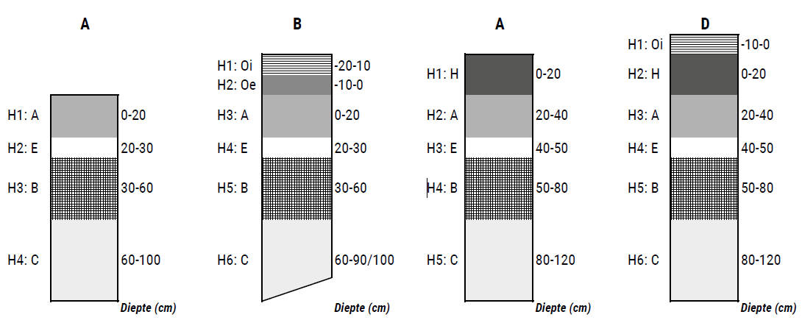
4.2.3 Horizontbegrenzing - duidelijkheid
De duidelijkheid van de ondergrens van een horizont of laag verwijst naar de dikte van de grenszone tussen aanliggende aardkundige eenheden (tabel 9). Meet de dikte van de overgangszone tussen de twee aanliggende horizonten. Dit is de afstand tussen het punt waar kenmerken van de onderste horizont beginnen en het punt waar de
kenmerken van de bovenste horizont stoppen of anders gesteld de afstand tussen het punt waarin je zeker nog in de bovenliggende horizont bent en het punt waarin je zeker al in de onderliggende horizont bent. In het geval van een recente ploeglaag bijvoorbeeld is dat vaak maar 1 of 2 mm.
| Categorieën | Dikte grensovergang | Subcategorie | Dikte grensovergang |
|---|---|---|---|
| Abrupt | 0-2 cm | Messcherp | 0–0,3 cm |
| Zeer scherp | 0,3–0,5 cm | ||
| Scherp | 0,5–2,0 cm | ||
| Duidelijk | 2-5 cm | - | - |
| Geleidelijk | 5-15 cm | - | - |
| Diffuus | \15 cm | - | - |
Voor de categorie ‘Abrupt’ kan ook gekozen worden om de categorie verder te specifiëren volgens de subcategorieën (Messcherp, Zeer Scherp of Scherp).
Bij onderzoek waar de duidelijkheid van de horizontgrens belangrijk is, wordt de exacte dikte van de grensovergang (in cm) best genoteerd.
Voorbeeld
0.1 cm grens; 1-3 cm grens
4.2.4 Horizonttopografie
De horizonttopografie geeft de vorm van de grens aan (tabel 4.3; fig. 4.2).
| Categorie | Omschrijving |
|---|---|
| Recht | Bijna vlak verlopend |
| Golvend | Instulpingen minder diep dan breed |
| Onregelmatig | Instulpingen dieper dan breed |
| Onderbroken | Discontinu |
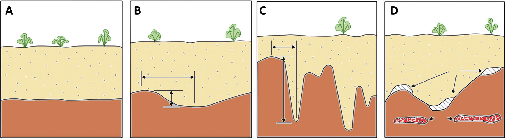
4.3 Bodemvochtigheid
Duid per aardkundige eenheid de actuele bodemvochtigheid aan. Aangezien de kleur van een bodem varieert naargelang de vochttoestand, is het belangrijk de conditie waarin de kleur werd bepaald, te noteren. Hieronder vind je een handige veldtest om de vochtigheidsgraad te bepalen (tabel 4.4).
| Categorie | Bij bevochtigen wordt de bodem | Bij wrijven wordt de bodemkleur | Andere kenmerken |
|---|---|---|---|
| Droog | Donker | Bijna niet lichter | |
| Licht vochtig | Iets donkerder | Duidelijk lichter | Geen glanzend bodemoppervlakte |
| Vochtig | Geen verandering | Duidelijk lichter | Zwak glanzend bodemoppervlakte |
| Nat | Geen verandering | Geen verandering | Glanzend bodemoppervlakte; waterverzadigd |
4.4 Bodemkleur
Kleur is één van de belangrijkste bodemkenmerken voor aardkundig onderzoek. Het is het eerste kenmerk dat je ziet en het is het voornaamste kenmerk waarop je steunt om de aardkundige eenheden te onderscheiden. Men onderscheidt bijvoorbeeld een “zwarte”, “bruine” of “grijze” laag of horizont.
Bepaal de kleur volgens het Munsell kleursysteem (code en benaming), samen met de vochtigheidstoestand van de bodem (zie § 4.3). De Munsell code bevat drie componenten:
Hue: dominante spectrale kleur of tint (houdt verband met de golflengte van het licht – cfr. regenboog);
Value: graad van donker (1) tot licht (8) of van zwart tot wit (hoeveelheid gereflecteerd licht);
Chroma: zuiverheid en sterkte (intensiteit) van spectrale kleur van bleek (1) tot helder (8).
Voorbeelden
Kleurkaart: 10YR GLEY 21 10Y – 5GY2 WHITE3 Code 10YR 5/6 10BG 4/1 5GY 4/4 7.5YR 9.5/2 Hue 10YR (geelrood) 10BG (blauwgroen) 5GY (groengeel) 7.5YR (geelrood) Value 5 4 4 9.5 Chroma 6 1 4 2 Naam Geelachtig bruin Donker groenachtig grijs Olijfgroen Licht geelachtig roze Voorbeelden rapportering kleur:
Grijsachtig bruin 10YR 5/2 (vochtig) en lichtbruin grijs 10YR 6/2 (droog),
Donker grijsbruin tot grijsbruin 2.5Y 4,5/2 (vochtig) en lichtbruin grijs 2,5Y 6/2 (droog).
4.5 Kleurvlekken
Vlekken kunnen allerlei vormen aannemen en zijn zones met een kleur die verschillend is van de dominante kleur van de bodemmatrix. Ze geven meestal aan dat de bodem afwisselend natte (reducerende) en droge (oxiderende) omstandigheden ondergaat. Andere vlekken kunnen het gevolg zijn van ongelijkmatige verwering van het moedermateriaal, klei (+ ijzer) migratie en accumulatie, selectieve afbraak door schimmels/bacteriën van organisch materiaal enz.
Beschrijf de vlekken in termen van kleur, aantal en contrast. Verder kan ook de grootte (in cm) en de duidelijkheid van de begrenzing (zie § 4.2.3) van de vlekken worden bepaald. Bovendien kan de vorm, de positie of elk ander kenmerk worden beschreven.
4.5.1 Kleur
Bepaal de kleuren met de Munsell Soil Color Charts (zie § 4.4).
Als de kleur verandert na blootstelling aan de lucht (door oxidatie), bepaal dan de kleur zowel voor als na de oxidatie.
4.5.2 Aantal
Schat het percentage ingenomen door vlekken per aardkundige eenheid (zie fig. 4.14) en verdeel onder in categorieën (tbl-04-05). Wanneer vlekken zo overheersen dat een onderscheid tussen matrix- en vlekkenkleur niet meer mogelijk is, beschrijf dan de overheersende kleuren (als bodemmatrixkleuren, zie § 4.4).
| Categorie |
|---|
| Zeer weinig (0-2%) |
| Weinig (2-5%) |
| Vaak (5-15%) |
| Veel (15-40%) |
| Zeer Veel (40%) |
4.5.3 Contrast
Beschrijf het kleurcontrast tussen vlekken en de matrix (tabel 4.6).
| Categorie | Omschrijving |
|---|---|
| Onduidelijjk | De vlekken zijn enkel van dichtbij zichtbaar. Bodemkleuren van zowel de matrix als van de vlekken verschillen weinig van elkaar. |
| Duidelijk | De vlekken zijn gemakkelijk te zien. Hue, chroma of value van de matrix is eenvoudig te onderscheiden van de vlekken. |
| Uitgesproken | De vlekken zijn opvallend. Hue, chroma en value, alleen of in combinatie, liggen verschillende eenheden uit elkaar |
4.6 De benaming van de aardkundige eenheid (horizontsymbolen)
4.6.1 Hoofdhorizonten en -lagen (mastersymbolen)
De hoofdletters H, O, A, E, B, C, L, R en T vertegenwoordigen de hoofdhorizonten of -lagen (tabel 4.7).
| Symbool | Beschrijving |
|---|---|
| H | Organische horizont gevormd onder langdurig waterverzadigde omstandigheden (veen). De H-horizonten worden naargelang de graad van ontbinding verder ingedeeld: Hi (fibric), vrijwel intacte plantenresten, He (mesic), gedeeltelijk verteerd, Ha (sapric), doorgedreven stadium van ontbinding. |
| O | Organische horizont gevormd door accumulatie van plantenresten die op het bodemoppervlak zijn gevallen, maar niet in waterverzadigde omstandigheden. Oi: bestaat uit niet tot weinig verteerd organisch materiaal, vooral strooisel zoals bladeren/naalden, twijgen, houtachtige materialen. Oe: bestaat uit matig verteerd, vooral gefragmenteerd organisch materiaal waarvan de originele structuur nog te herkennen is. Oa: bestaat uit vooral sterk verteerd organisch materiaal, humus; de originele structuur van het organisch materiaal is niet langer herkenbaar. |
| A | Minerale horizont aangerijkt met gehumificeerd organisch materiaal, gevormd aan of nabij het oppervlak. |
| E | Minerale horizont waaruit klei en/of ijzer en/of aluminium zijn uitgeloogd (eluviatie); heeft meestal een lichtere kleur en/of lichtere textuur dan de boven- en onderliggende horizonten. |
| B | Minerale horizont meestal onder een A- of E-horizont, waarin bodemprocessen hebben plaatsgegrepen; de originele stratificatie of sedimentstructuur (i.e. geologische structuur) is ten minste grotendeels verdwenen. De belangrijkste bodemprocessen bij het transformeren van een C-horizont in een B-horizont zijn: Kleurontwikkeling (verbruining), Structuurontwikkeling, Ontkalking (uitloging van carbonaten), Kleivorming door verwering van primaire bodemmineralen, Illuviatie (aanrijking) van ijzer, aluminium, klei, humus. |
| C | Het moedermateriaal: een ongeconsolideerde minerale laag, niet of zeer weinig beïnvloed door bodemvormende processen, dus waar de geologische structuur domineert (eigenschappen kenmerkend voor de H-, O-, A-, E- of B-horizonten ontbreken). |
| L | Limnisch materiaal: sedimenten afgezet onder water, bestaande uit zowel organisch als mineraal bodemmateriaal. Limnisch materiaal is bijvoorbeeld afgezet door het neerslaan van organismen die in het water leefden zoals algen, diatomeeën, … of is afkomstig van onderwatervegetatie die later bewerkt werd door de waterfauna. Sedimentaire afzettingen van veen horen hierbij maar niet de afzettingen die bestaan uit in situ plantengroei (gebruik hiervoor de H). |
| R | Weinig verweerd, of onverweerd, hard gesteente |
| T | Technisch harde materialen zoals asfalt, beton, funderingen, etc. |
4.6.1.1 Overgangshorizonten
Er zijn twee soorten overgangshorizonten (fig. 4.3): horizonten met de eigenschappen van de boven- en de onderliggende horizont die geleidelijk in elkaar overgaan, en horizonten met eigenschappen van de twee horizonten maar van elkaar gescheiden (zowel horizontaal naast elkaar of elkaar snel afwisselend verticaal).
Voorbeeld:
Op elkaar ontwikkeld: AB, BC,AE,… Gescheiden: A/B, B/C, C/R, E/B, E/Bt,…
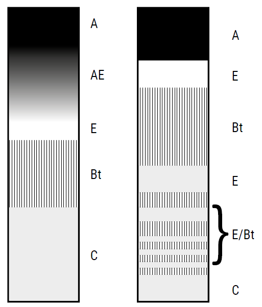
4.6.2 Bijkomende kenmerken van een horizont/laag (subordinate symbolen)
Bijkomende kenmerken binnen de hoofdhorizonten en lagen zijn gebaseerd op kenmerken die in het veld waarneembaar zijn. Kleine letters worden gebruikt als achtervoegsels om specifieke soorten hoofdhorizonten en lagen en andere kenmerken aan te duiden. De lijst met symbolen en termen wordt weergegeven in tabel 4.8:
| Symbool | Beschrijving | Gebruik |
|---|---|---|
| a | Sterk verteerd organisch materiaal | H- en O-horizonten |
| b | Begraven horizont of laag | |
| β | Een biologisch zeer actieve horizont | Niet voor A-horizonten |
| c | Concreties en/of nodules | |
| d | Compacte horizont, wortelbeperkend | |
| e | Gedeeltelijk verteerd organisch materiaal | H- en O-horizonten |
| g | Oxido-reductie vlekken (Fe en/of Mn) veroorzaakt door een tijdelijk stagnerend watertafel | |
| h | Accumulatie van organische stof | |
| i | Licht verteerd organisch materiaal | H- en O-horizonten |
| j | Accumulatie van jarosiet | |
| k | Accumulatie van secundaire kalk | |
| l | Oido-reductie vlekken (Fe en/of Mn) veroorzaakt door een fluctuerende grondwater tafel | |
| m | Gecementeerde horizont | Vooral in B-horizont van Podzol |
| m | Moeraskalk, mergel | L-horizont |
| p | Bewerkte horizont (ploeglaag…) | A-horizont (oppervlak of begraven) |
| q | Accumulatie van silicium | |
| r | Sterke reductie (permanente grondwatertafel) | |
| s | Illuviale accumulatie van sesquioxiden | |
| t | Aanwezigheid van klei illuviatie | B-horizont |
| u | Aanwezigheid van antropogeen materiaal | |
| w | Kleur en/of structuur wegens bodemgenese | B-horizont |
| x | Fragipan kenmerken (niet noodzakelijk een Bt) | o.a. Btx-horizont |
| y | Accumulatie van gips | |
| z | Accumulatie van zouten die meer oplosbaar zijn dan gips | |
| zo | Zoögenetisch (van dierlijke oorsprong: meso of macrofauna) | Enkel voor H-, O- en A-horizonten Te plaatsen voor het hoofdsymbool |
| noz | Niet zoögenetisch (geen dierlijke activiteit, wel aanwezigheid van schimmels). | Enkel voor H-, O- en A-horizonten Te plaatsen voor het hoofdsymbool |
| @ | Sporen van cryoturbatie | |
| ^ | Antropogeen (mechanisch) aangevoerd materiaal | te plaatsen voor het hoofdsymbool |
4.6.3 Vertikale onderverdelingen
Een horizont of laag kunnen we verder onderverdelen en duiden we aan met een combinatie van lettersymbolen gevolgd door een cijfer. De cijfers worden gebruikt om horizonten met dezelfde symbolen van elkaar te kunnen scheiden.
Voorbeeld:
- C1-C2-C3
- C1-C2-Cg1-Cg2
- C-Cg1-Cg2
- Bt1-Bt2-Ck1-Ck2
4.6.3.1 Lithologische discontinuïteit
Een lithologische discontinuïteit is een significante verandering in het bodemmateriaal, bijvoorbeeld tussen het moedermateriaal en een onderliggend substraat (zie § 3.2). Dit kan zich weerspiegelen in een verandering in de korrelgroottesamenstelling en/of de mineralogie. Duid het verschil in substraat aan met een cijfer voor het hoofdsymbool. Bij het bovenste moedermateriaal dien je echter geen “1” te vermelden (fig. 4.4).
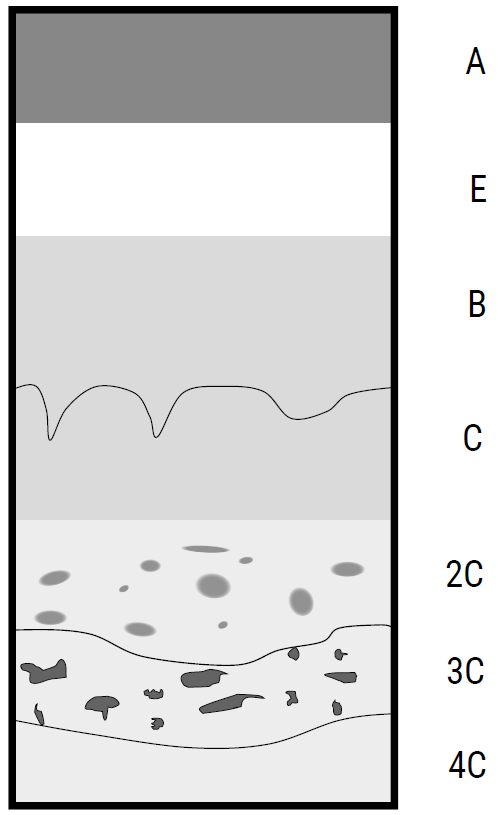
4.7 Antropogeen (mechanisch) aangevoerd materiaal
Antropogeen (mechanisch) aangevoerd materiaal (meestal sinds de industriële periode) wordt geïdentificeerd aan de hand van:
De manier van afzetting (abrupte grenzen, verdichting…),
De aanwezigheid al dan niet van artefacten,
De beperkte afwezigheid van bodemvormende kenmerken,
Afwezigheid van natuurlijk transport (bijvoorbeeld door wind, water…).
Aardkundige eenheden ontwikkeld in antropogeen aangevoerd materiaal worden beschreven met hetzelfde detailniveau als horizonten ontwikkeld in het moedermateriaal. Het voorvoegsel ^ wordt gebruikt om door mensen vervoerd materiaal aan te duiden (Soil Survey Staff, 2014; Delbecque et al., 2022), terwijl het gebruik van bijkomende symbolen (tabel 4.9) dienen om eigenschappen aan te duiden die van het antropogeen aangevoerd materiaal zelf zijn geërfd. Zie ook fig. 4.5 en fig. 4.6.
| Symbool | Beschrijving |
|---|---|
| ^T | Technisch hard materiaal, aangevoerd (bv tegels, betonlaag, glas, asfalt, …) |
| ^A | Oppervlaktehorizont ontwikkeld in antropogeen aangevoerd materiaal |
| ^Ah | Oppervlaktehorizont ontwikkeld in antropogeen aangevoerd materiaal aangerijkt met organisch materiaal |
| ^Ab | Begraven oppervlaktehorizont van antropogeen aangevoerd mineraal materiaal |
| ^Bw | Aangevoerd mineraal bodemmateriaal. De kleur- of structuurontwikkeling (‘w’) is een kenmerk overgenomen van het aangevoerd materiaal of kan in situ gevormd zijn |
| ^E | Aangevoerd mineraal materiaal van een oorspronkelijke uitlogingshorizont |
| ^C | Mineraal materiaal, waar sinds de antropogene afzetting geen bodemvorming in opgetreden is, dus waarin nog geen nieuwe bodemstructuur of verkleuring voorkomt die erop wijst dat verwering heeft plaats gevonden |
| ^Ch | Aangevoerd mineraal materiaal rijk aan organisch materiaal, waar sinds de antropogene afzetting geen bodemvorming in opgetreden is |
| ^Cu | Aangevoerd mineraal materiaal gedomineerd door afval van menselijke nederzettingen en/of industriële residuen (slakkenhopen, bagger, klinkers, as, puin, etc.) |
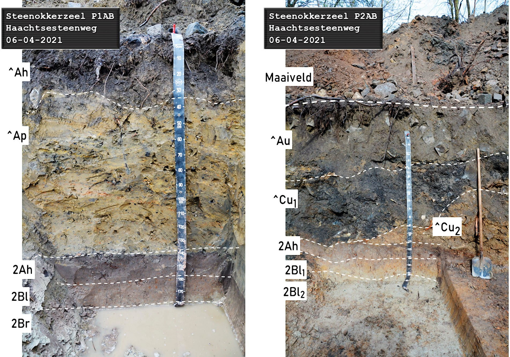
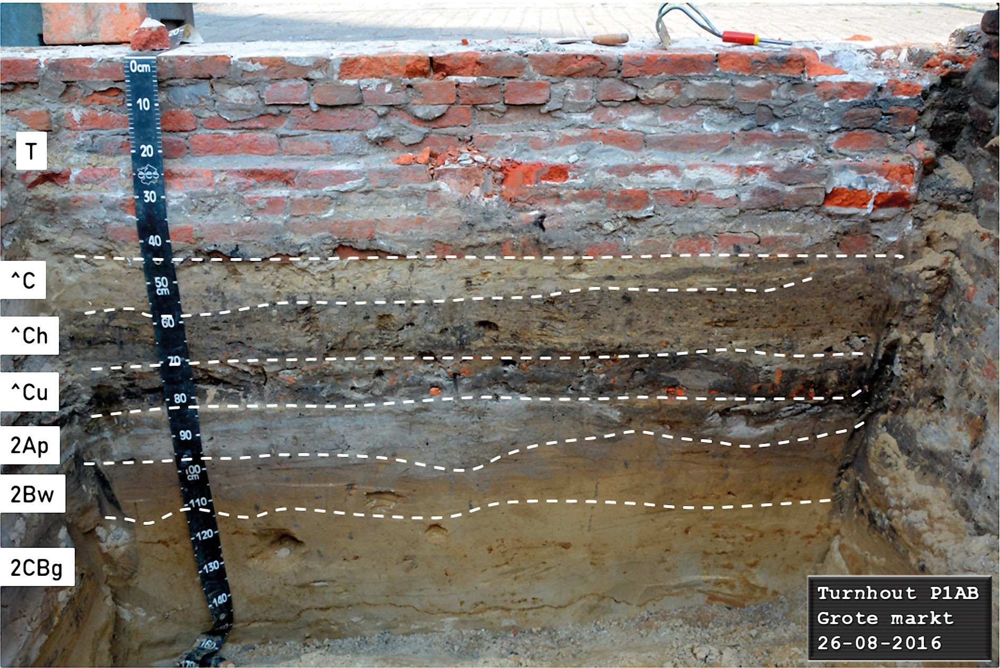
4.7.1 Textuur
In de bodemkunde verwijst “textuur” naar de verhouding, uitgedrukt in een massapercentage, van drie minerale korrelgroottefracties klei, leem en zand in het fijne bodemmateriaal (fractie 0 – 2 mm). Naargelang de verhouding van klei, leem en zand kan men verschillende textuurklassen onderscheiden (tabel 4.10; fig. 4.7 en fig. 4.8).
| Categorie | Benaming |
|---|---|
| Z | Zand |
| S | Lemig zand |
| P | Licht zandleem |
| L | Zandleem |
| A | Leem |
| E | Klei |
| U | Zware klei |
Voorbeeld:
10% klei, 60% leem en 30% zand (het totaal is steeds 100), textuurklasse ‘L – Zandleem’
De textuur kan met een handige veldtest (fig. 4.7) worden bepaald en aangeduid volgens de klasse-indeling en klassegrenzen van de textuurdriehoek van de Belgische bodemkartering (figuur 13). Opletten, bij een hoger gehalte aan organisch materiaal kan in het veld de textuur kleirijker aanvoelen.
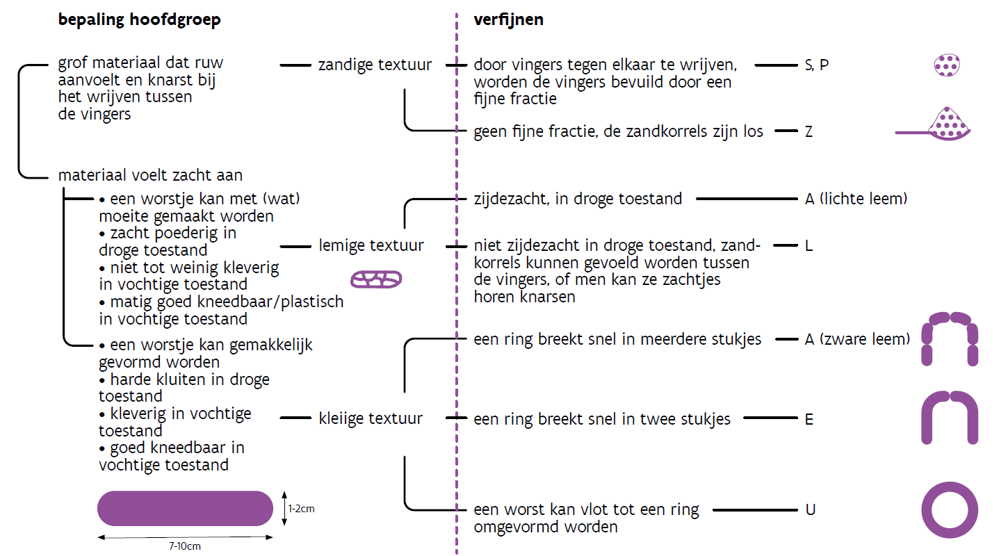
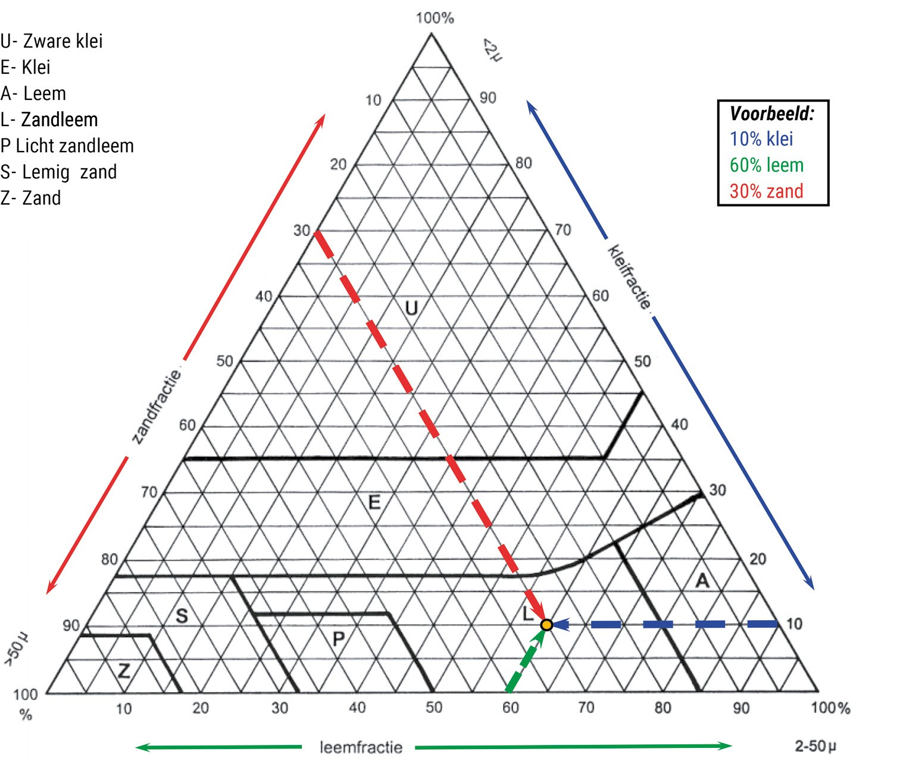
4.7.2 Aanwezigheid van kleihuidjes
Onder bepaalde omstandigheden zal klei migreren in de bodem. Het herkennen van dit bodemproces tijdens het veldwerk is belangrijk (ouderdom, pH-regime, …). Gebruik een handlens om kleihuidjes op structuuroppervlakken of in poriën te kunnen vaststellen (zie ook fig. 4.17). Noteer ook of het gaat om klei, klei + humus of klei + ijzer huidjes.
4.8 Grove fragmenten
‘Grove fragmenten’ in de bodem hebben een diameter groter dan 2 mm (voor oppervlaktestenen zie § 4.1. Het kan gaan om grind, gesteentefragmenten, bakstenen, etc. maar niet om materiaal van organische oorsprong zoals wortels, takken etc.
Verschillende eigenschappen kunnen worden beschreven: oorsprong, frequentie (tabel 4.11), grootte (tabel 4.12), vorm (tabel 4.13), staat van verwering en aard van de fragmenten.
fig. 4.9 kan helpen bij de visuele schatting van het volume aan grove fragmenten zichtbaar op de bodemwand (Let op: er is een algemene neiging om de hoeveelheden te overschatten). Gebruik hiervoor de categorieën uit tabel 4.11.
| Categorie |
|---|
| Geen (0 %) |
| Zeer weinig (0-2 %) |
| Weinig (2-5 %) |
| Vaak (5-15 %) |
| Veel (15-40 %) |
| Zeer veel (40 %) |
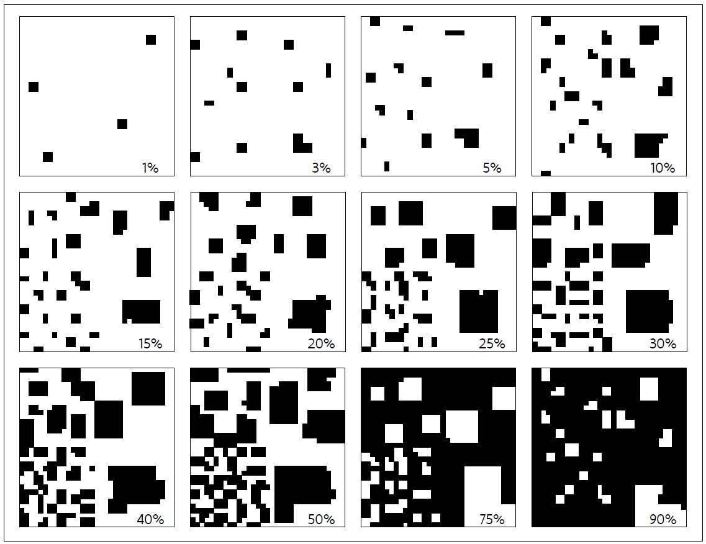
| Categorie | Grootte |
|---|---|
| Fijn (0,2–0,6 cm) | G | rind |
| Gemiddeld (0,6–2 cm) | G | rind |
| Grof (2–6 cm) | G | rind |
| Zeer grof (\6 cm) | St | enen en rotsen |
| Categorie |
|---|
| Plat |
| Hoekig |
| Gedeeltelijk afgerond |
| Afgerond |
Bij gesteentefragmenten kan je de staat van verwering beschrijven (tabel 4.14).
| Categorie | Omschrijving |
|---|---|
| Vers of licht verweerd | fragmenten vertonen weinig of geen sporen van verwering |
| Verweerd | gedeeltelijke verwering wordt aangegeven door verkleuring en verlies van kristalvorm in het buitenste deel van de fragmenten, terwijl de kernen relatief vers blijven; fragmenten hebben weinig van hun oorspronkelijke sterkte verloren |
| Sterk verweerd | alle behalve de meest resistente mineralen zijn sterk verkleurd en veranderd; de fragmenten hebben de neiging onder (hand)druk uiteen te vallen |
4.8.1 Type fragmenten
De grove fractie wordt in antropogeen materiaal en natuurlijke gesteentefragmenten onderverdeeld.
Voorbeeld:
Antropogeen: Baksteen; steenkool; houtskool; aardewerk; mortel/pleister; Natuurlijk: keien; schelpen; natuurlijk voorkomende stenen;
4.8.2 Distributie/verspreiding van de grove fractie in het profiel
Bestudeer de verspreiding van zowel de natuurlijke gesteenten als van het antropogene materiaal.
Voorbeeld:
- Willekeurig
- Geconcentreerd
- In een laag
- In een spoor
4.8.3 Cappings en pendants
4.8.3.1 Cappings
Gesteentefragmenten in de bodem kunnen, onder invloed van vries/dooi cycli, aan hun bovenkant een sterke adhesie vertonen met de bodemmatrix waarin ze zich bevinden. Aan de onderkant van het gesteente kleeft er geen of weinig matrixmateriaal aan het gesteente. De stenen in kwestie zijn als het ware voorzien van een soort ‘sedimentkapje’ (fig. 4.10).
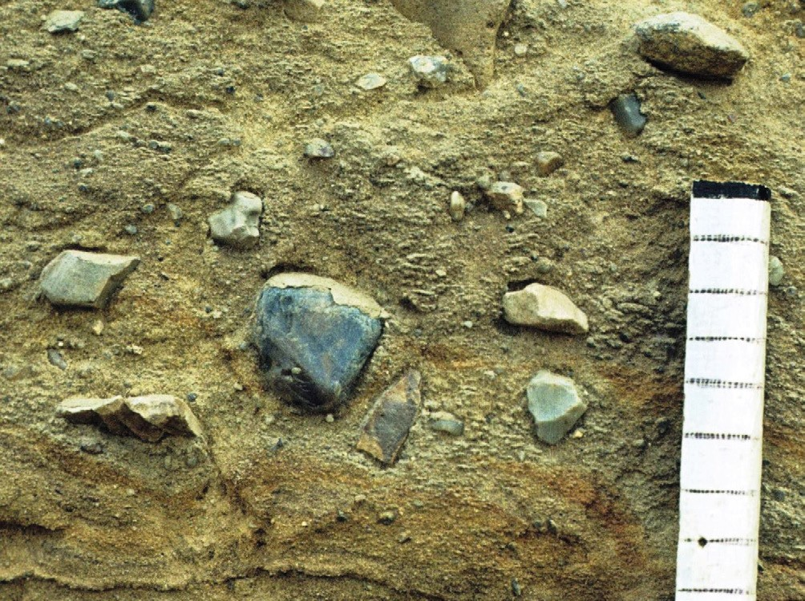
Artefacten die dergelijk kenmerk bezitten wijzen op een periode met belangrijke vries/dooi in de bodem. De laatste periode is tijdens de Jonge Dryas. Het is belangrijk om artefacten van vóór en na de Jonge Dryas te onderscheiden vermits het belangrijke informatie vormt over de diverse perioden van het Finaal-Paleolithicum (±13.000-9.600 BP).
Omdat de capping niet bij elk fragment even sterk is ontwikkeld, bekijk je er best een aantal terwijl je er goed op let ze in dezelfde positie te houden, zoals ze in de bodem voorkomen. Het is belangrijk de artefacten met capping niet schoon te maken, zo niet gaat deze essentiële bodemkundige informatie verloren!
Normaal bevindt de capping zich aan de bovenzijde van artefacten; indien dit niet het geval is, wijst dit op een latere verstoring (cryoturbatie, bioturbatie…).
4.8.3.2 Pendants
Een pendant is een laminaire accumulatie van bodemvormend materiaal, bijvoorbeeld calciumcarbonaat of silica, dat accumuleert onderaan de grove fractie (grind, stenen, …) die aanwezig is in de bodem (fig. 4.11).
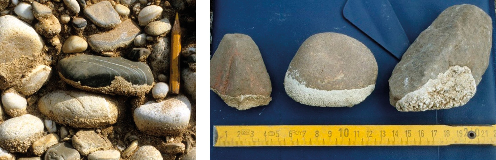
4.9 Bodemstructuur
Bodemstructuur gaat over de natuurlijke aggregaten die door barsten of poriën van elkaar zijn gescheiden. Bodemstructuur wordt aan de hand van de dominante vorm, de afmetingen, de graad en oorsprong van ontwikkeling van de aggregaten (fig. 4.12) beschreven. Opletten, de beschrijving van kruimelige structuur volgt Ameryckx et al., 1995 en is conform de Belgische bodemkartering en de Vlaamse bodemdatabanken. Deze definitie is anders dan die van FAO 2006.
4.9.0.1 Types van bodemstructuur
Beschrijf de types (categorieën) van bodemstructuren volgens tabel 4.15.
| Categorie | Omschrijving |
|---|---|
| Kruimelig | Sferisch, zeer poreus, eenheden die niet in elkaar passen. De kruimelstructuur kent een goede lucht-water verhouding. Een goed ontwikkelde kruimelstructuur wordt vaak met regenwormuitwerpselen, molshopen en sterke doorworteling in graszoden geassocieerd, maar ook in goed beheerde akkerlanden met organische mest en groenbedekkers kan de ploeglaag een goed ontwikkelde kruimelstructuur vertonen |
| Granulair | Sferisch, weinig poreus, aggregaten zijn gebogen of onregelmatig van vorm. Naast elkaar liggende aggregaten passen niet in elkaar. Onder andere gevormd door vries/dooi in kleirijke bodems en een sterke biologische activiteit aan het bodemoppervlak |
| Platig | Plaat-, blad- of lensvormen, liggen meestal evenwijdig aan het bodemoppervlak. De dikte varieert van amper een millimeter (blad) tot enkele centimeters. Meestal gevormd ten gevolge van compactie (betreding of berijding bijvoorbeeld) of door vries/dooi cycli en komt in dat geval eerder voor in een compacte horizont of laag (bv.: Bt-horizont…). Opgelet: dit mag niet verward worden met stratificatie of gelaagdheid (zie hieronder) |
| Hoekig- blokkig | Kubusvorm, bijna equidimensionaal, met relatief scherpe hoeken en vlakke oppervlakken die goed aansluiten met de omliggende blokeenheden, doorgaans enkele cm in diameter. Gevormd door alternerend zwellen en krimpen ten gevolge van wisselingen in de bodemvochtigheid, vandaar een sterk verband met de hoeveelheid klei: hoe meer klei, hoe beter ontwikkeld |
| Subhoekig- blokkig | Zoals voorgaande maar met afgeronde oppervlakken, genese zoals voorgaande maar met een zekere invloed van biologische activiteit, vandaar de meer afgeronde morfologie |
| Prismatisch | De afmetingen zijn groter in verticale dan in horizontale richting, vormt polygonen in horizontaal vlak. De prisma’s kunnen meerdere decimeters in diameter zijn, de vorming ervan is vooral te wijten aan alternerend zwellen en krimpen ten gevolge van wisselingen in de bodemvochtigheid, krimp alleen komt voor bij uitdroging van waterverzadigde bodems (frequent in archeologische structuren), of bij permafrost (fragipan horizont) |
| Loskorrelig | Loskorrelig in geval van zand (bv. duinzanden) (Structuurloos) |
| Massief | Massief kan voorkomen bij fijnere bodemtexturen. Er is geen organisatie van de bodemdeeltjes in aggregaten (recent alluvium en colluvium, recente stortlaag) (Structuurloos) |
| Gelaagd | De bodem is uit sedimentaire lagen opgebouwd (Structuurloos) |
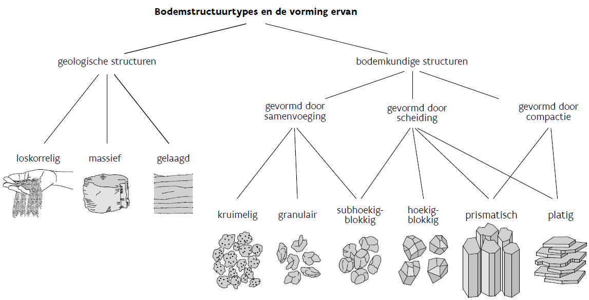
4.9.0.2 De afmetingen
De afmetingen van de bodemstructuureenheden kunnen met grootteklassen worden beschreven (tabel 4.16).
Voorbeeld
Zeer grof of dik prismatisch (300-400 mm)
| Categorie | Kruimelig/blokkig (mm) | Prismatisch (mm) | Platig/granulair (mm) |
|---|---|---|---|
| Zeer fijn of dun | 0-5 | 0-10 | 0-1 |
| Fijn of dun | >5-10 | >10-20 | >1-2 |
| Medium | >10-20 | >20-50 | >2-5 |
| Grof of dik | >20-50 | >50-100 | >5-10 |
| Zeer grof of dik | >50 | >100-500 | >10 |
| Extreem grof | >500 |
4.9.0.3 De graad van structuurontwikkeling
De ontwikkeling van de bodemstructuur is afhankelijk van de vochtigheidsgraad: hoe droger, hoe gemakkelijker je de aggregaten, door het krimpproces bij uitdrogen, kan herkennen.
Als de structuur niet goed ontwikkeld is, kan het moeilijk zijn om de mate van ontwikkeling van de structuur in te schatten, vooral als de bodem vochtig is. Kijk of de aggregaten aan alle kanten of slechts aan enkele zijden goed zijn afgebakend en hoe gemakkelijk de aggregaten van elkaar te scheiden zijn. De graad van ontwikkeling van structuur wordt gedefinieerd in tabel 4.17.
| Categorie | Beschrijving |
|---|---|
| Geen | Structuurloos, zoals voor loskorrelig, massief of gelaagd (fig. 4.12) |
| Zwak | Aggregaten zijn nauwelijks waarneembaar, er is slechts een zwakke schikking van natuurlijke oppervlakken. Bij een zachte verstoring breekt het bodemmateriaal in een mengeling van weinig volledige aggregaten, veel gebroken aggregaten en veel materiaal zonder aggregaatvlakken. |
| Matig | Aggregaten zijn in het profiel waarneembaar en er is een duidelijke schikking van structuurvlakken. Bij verstoring breekt het bodemmateriaal in een mengeling van vele volledige aggregaten, sommige gebroken aggregaten en weinig materiaal zonder aggregaatvlakken. De oppervlakken vertonen over het algemeen duidelijke verschillen met de binnenkant van de aggregaten. |
| Sterk | Aggregaten zijn duidelijk waarneembaar en er is een uitgesproken schikking van de structuurvlakken. Bij verstoring valt het bodemmateriaal vooral uiteen in volledige aggregaten. De structuurvlakken van de aggregaten en de binnenkant van de aggregaten verschillen sterk van kleur |
4.9.0.4 Samengestelde structuur
De aanwezigheid van meer dan één structuurtype in een bodemhorizont komt geregeld voor. In zo’n geval worden beide structuurtypes volgens vorm, afmeting en graad van ontwikkeling beschreven.
Voorbeeld
Sterk prismatisch, tot 30 cm diameter, brekend in matig hoekige blokstructuur van 2-4 cm diameter (fig. 4.13).
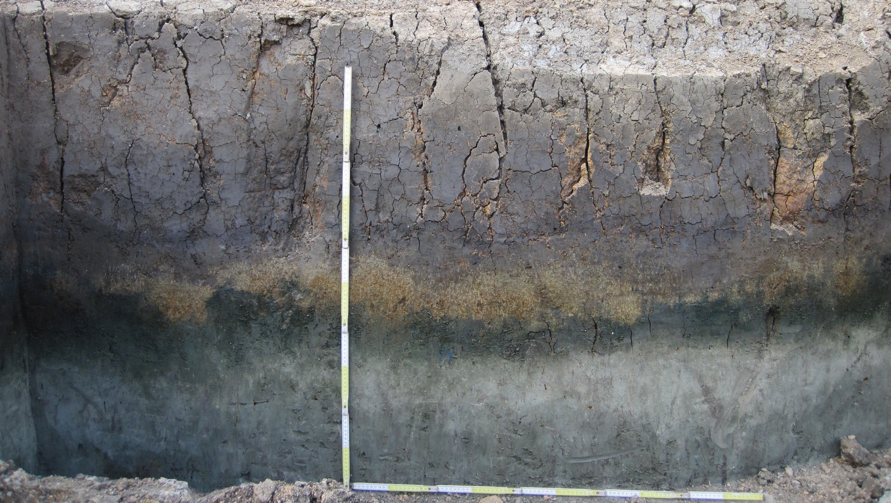
4.9.1 Cementatie
De belangrijkste cementerende stoffen zijn:
Silicium
Kalk
IJzer
Mangaan
Humus.
Gecementeerde horizonten of bodemlagen hebben meestal een grove korrelgrootte (zand, grind) (fig. 4.14, links en fig. 4.14, rechts) omdat er slechts een kleine hoeveelheid cement nodig is om de contactvlakken van grote korrels aan elkaar te doen kitten. De humus/ijzer-aanrijkingshorizont van podzolen kan soms gecementeerd zijn. Wortels kunnen niet door een gecementeerde horizont groeien tenzij langs barsten. Een gecementeerd bodemfragment valt niet uit elkaar wanneer een luchtdroog fragment gedurende 1 uur in water wordt ondergedompeld. Voor de graad van cementatie zie tabel 4.18.
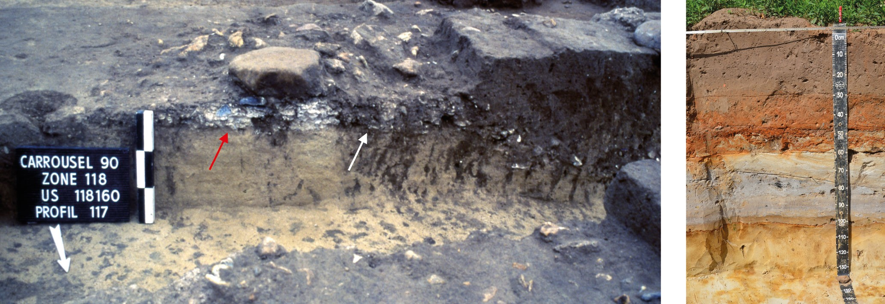
| Categorie | Omschrijving |
|---|---|
| Zwak | Gecementeerde massa is broos en hard, maar kan je tussen de vingers breken |
| Matig | Gecementeerde massa kan je niet tussen de vingers, maar wel met de handen breken |
| Sterk | Gecementeerde massa kan je niet met de handen breken |
4.9.2 Compactie
Compacte bodemhorizonten of lagen komen onder andere voor in akkers (ploegzool) bewerkt onder ongunstige omstandigheden, zones van betreding rond huizen, bij bosontginning, wegen en paden, drinkplaatsen van vee, recreatie. Natuurlijke processen zoals vries/dooi cycli en permafrost kunnen de bodem ook sterk compact maken.
Let op: gecompacteerde bodemhorizonten of lagen zijn niet noodzakelijk gecementeerd. Compactheid is een ander bodemkenmerk. Een compact, niet gecementeerd bodemfragment valt uit elkaar als het luchtdroog in water wordt ondergedompeld.
4.9.3 Levende wortels
Aanwezigheid (ja/neen) van levende wortels, hun grootte en hoeveelheid kan een belangrijke informatiebron zijn. Als er in het profiel een plotselinge verandering in de hoeveelheid en/of de grootte van de wortels voorkomt, is het belangrijk om uit te leggen waarom. Mogelijke wortelbeperkende factoren zijn: verdichting, cementatie, discontinu poriënsysteem, verandering in textuur enz. Soms kan het handig zijn om extra informatie te noteren, zoals een abrupte verandering in de wortel-oriëntatie.
4.9.3.1 Aantal
Het aantal levende wortels wordt per vierkante decimeter op een verticaal bodemoppervlak ingeschat. Maak een inschatting van het aantal wortels per grootteklasse (tabel 4.19).
Grootteklasse Aantal: |
Zeer fijn <0,5 mm |
Fijn 0,5-2 mm |
Medium > 2-5 mm |
Grof >5 mm |
|---|---|---|---|---|
| Geen | ||||
| Zeer weinig | 1-20 | 1-20 | 1-2 | 1-2 |
| Weinig | 21-50 | 21-50 | 3-5 | 3-5 |
| Matig veel | 5 1-200 | 5 1-200 | 6-20 | 6-20 |
| Veel | >200 | >200 | >20 | >20 |
Voorbeeld
Matig veel zeer fijne, weinig fijne, zeer weinig medium en geen grove wortels
4.9.4 Sporen van dierenactiviteit
4.9.4.1 Type van dierenactiviteit
Indien mogelijk kan het type dierenactiviteit worden beschreven.
Voorbeelden
- Mollengang, molshoop
- Regenwormkanaal, regenwormuitwerpselen
- Crotovina (galerij opgevuld met uitwerpselen van talrijke soorten dieren, inclusief regenwormen)
- Galerijen van grotere zoogdieren als konijnen en dassen
- Mierengang en -nest
- Andere insectenactiviteit (bv. mestkevers)
- Andere (definieer)
4.9.4.2 Concentratie
Maak een schatting van het aantal sporen van biologische activiteit als een percentage van de oppervlakte of tel in aantallen per vierkante meter (tabel 4.20). De voorkeur gaat hier naar een horizontaal vlak voor verticale graafactiviteit (grote regenwormen).
| Categorie |
|---|
| Geen |
| Zeer weinig (0-2 %) |
| Weinig (2-5 %) |
| Vaak (5-15 %) |
| Veel (15-40 %) |
| Zeer veel (\40 %) |
4.9.4.3 Toestand
Noteer of de faunagalerijen open of opgevuld zijn en of de biogalerijen abrupt stoppen (afgetopt zijn).
4.9.4.4 Geassocieerde kennmerken
Wortelpenetratie, oxido-reductie langs wanden (ontijzering, neerslag van ijzer, van mangaan)
4.9.5 Kalkreactie met HCl (carbonaten)
De aanwezigheid van carbonaten stel je vast door enkele druppels van een zuur (waterstofchloride,10% HCl) aan een bodemmonster toe te voegen. Gebruik hiervoor een flesje voorzien van een druppelteller. HCl kan je in de handel kopen en dien je te verdunnen met gedistilleerd of gedemineraliseerd water tot een concentratie van ongeveer 10%. Wanneer carbonaten aanwezig zijn, zal het monster opbruisen/“reageren” met de vorming van schuim ten gevolge van de productie van CO2 gas. De exacte hoeveelheid carbonaten wordt, indien nodig voor verder onderzoek, in het laboratorium bepaald. De kalk kan afkomstig zijn van bijvoorbeeld schelpen, mortel, cement, wortelgroei en pseudomycelium, kalkaanrijking vanuit het grondwater, etc.
Welke horizonten in de bodem zijn kalkrijk?
- Als er sporen van kalk in ten minste één aardkundige eenheid van het bodemprofiel worden gevonden, is het aangeraden de aanwezigheid/afwezigheid ervan voor alle eenheden te registreren.
Waar zit de kalk in de bodemhorizont?
- Noteer of er kalkrijke elementen zijn, dus waar zit de kalk (bv. in de poriën, in de antropogene elementen zoals kalkmortelbrokken, in de matrix…)
Is de kalk primair of secundair?
- Carbonaten komen voor in bodems onder primaire vorm (moedermateriaal, bijvoorbeeld in löss) en secundaire vorm (concreties, nodules), als gevolg van oplossing en opnieuw neerslaan als deel van de bodemvorming. Het is belangrijk deze twee vormen te onderscheiden.
Kalkklassen na toevoegen HCl, volgende categorieën kunnen toegepast worden (tabel 4.21).
| Categorie | Omschrijving |
|---|---|
| Kalkloos | Geen hoorbare of zichtbare reactie |
| Licht kalkrijk | De reactie is enkel hoorbaar |
| Matig kalkrijk | Opbruising, de reactie is ook zichtbaar |
| Sterk kalkrijk | Heel sterk opbruisend, bubbels vormen een lage schuimlaag |
| Extreem kalkrijk | Extreem sterke opbruising, de bubbels vormen snel een dikke schuimlaag |
4.9.6 Accumulatie van ijzer en mangaan
IJzer en mangaan kunnen in bijzondere milieucondities (in een reducerend of zuurstofarm milieu) oplossen, (dit proces zal vooral uitgesproken zijn in zure bodems), migreren en ten slotte neerslaan in zones waar terug zuurstof aanwezig is (oxidatie).
Zeker vier vormen van neerslag kunnen voorkomen:
Een aanrijking van de bodemmatrix onder de vorm van “vlekken” of zones van concentraties (fig. 4.15);
Concreties: een concentrische sferoïdale vorm, meestal gecementeerd (fig. 4.16);
Nodules: knobbels zonder concentrische vorm;
Huidjes: op structuurvlakken en langs galerijen of poriën (fig. 4.17)
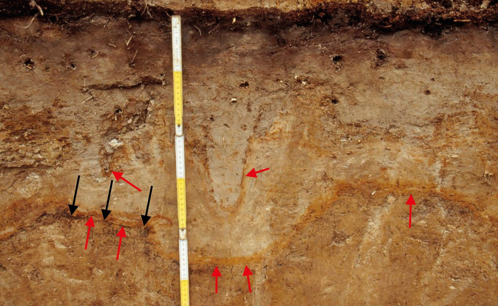
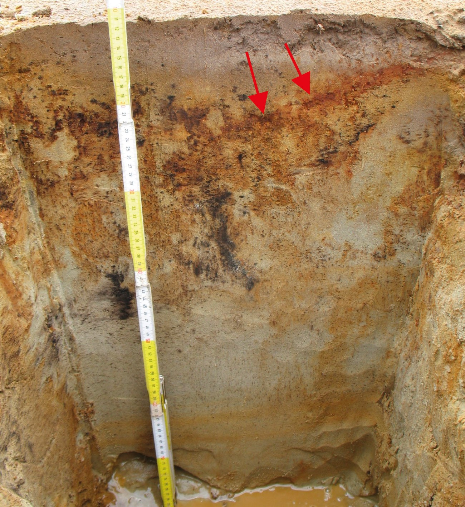
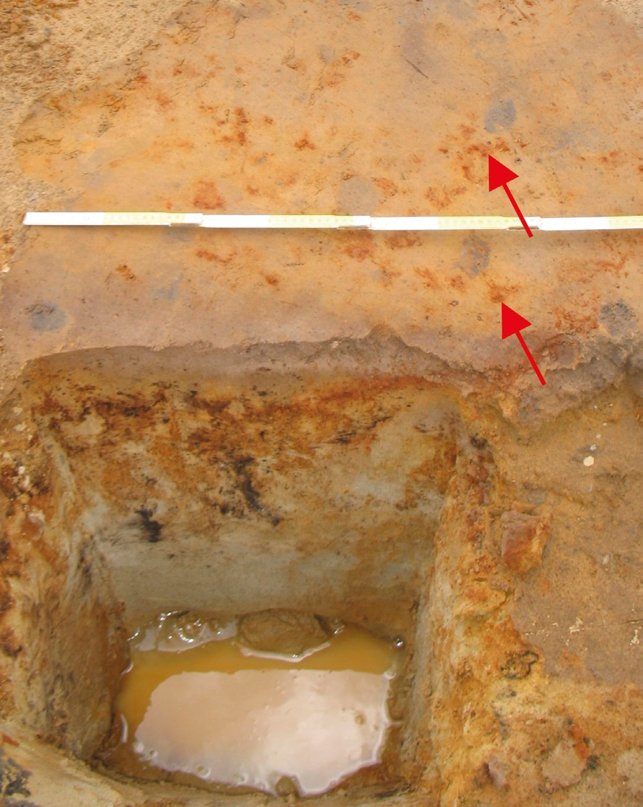
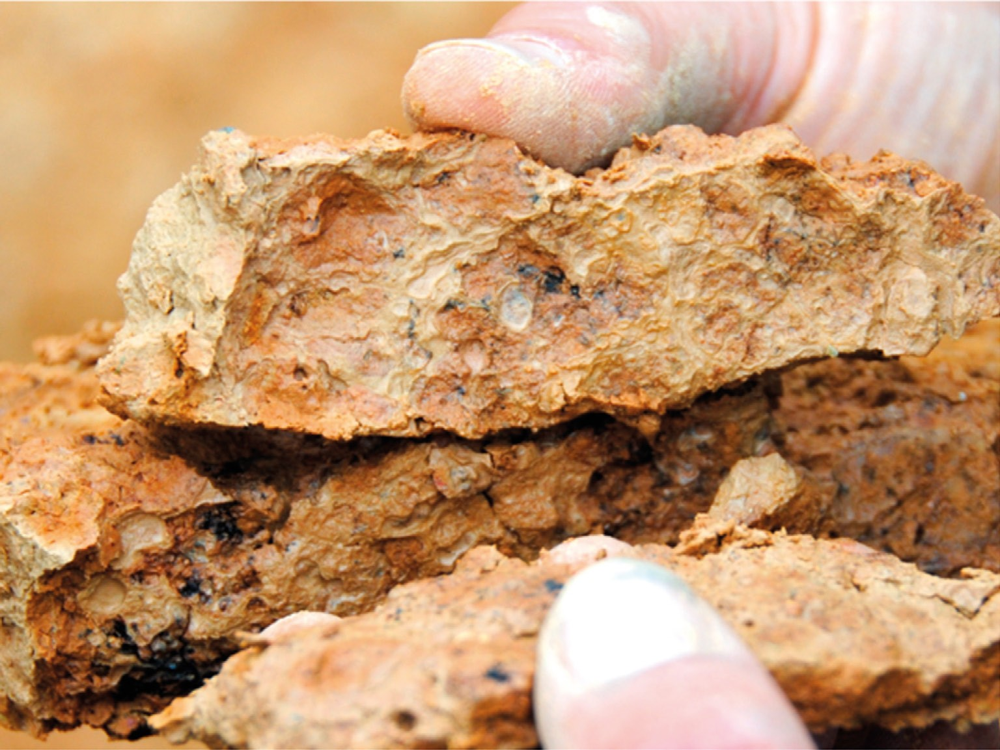
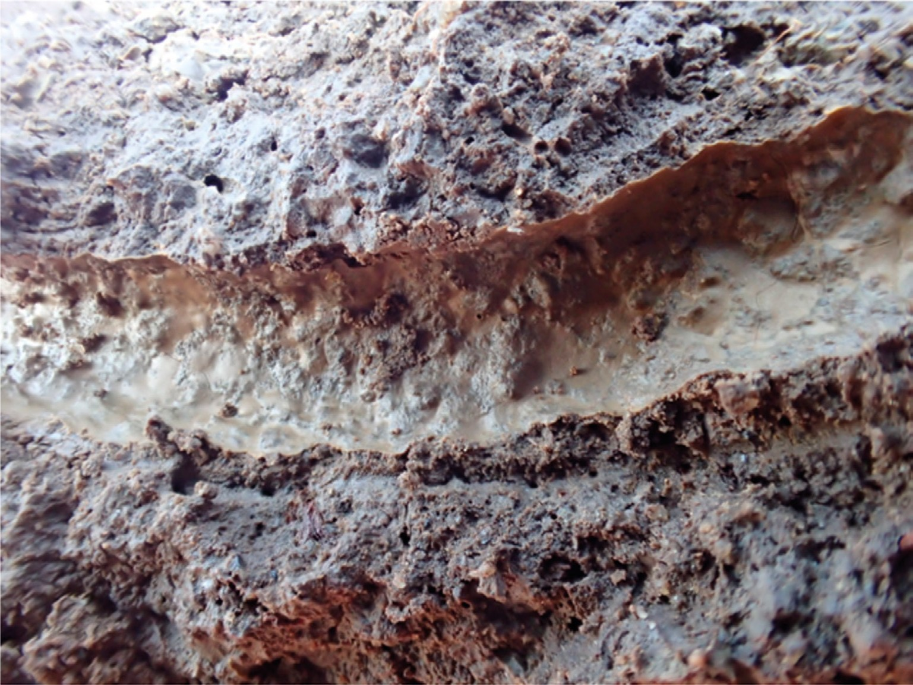